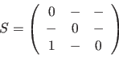
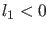
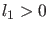
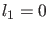

Next: Branch point locator Up: Equilibrium continuation Previous: Initialization by time integration Contents
In continuous-time systems there are two generic codim 1 bifurcations that can be detected along the equilibrium curve (no derivations will be done here; for more detailed information see [25]):
|  | (38) |
For each detected limit point, the corresponding quadratic normal form
coefficient is computed:
At a Hopf bifurcation
point, the first Lyapunov coefficient is computed by the formula
The first Lyapunov coefficient is quite important. If  then the Hopf bifurcation is supercritical, i.e. within the center manifold on one side of the bifurcation only stable equilibria exist, on the other side unstable equilibria coexist with stable periodic orbits. If  then the Hopf bifurcation is subcritical, i.e. within the center manifold on one side of the bifurcation stable equilibria coexist with unstable periodic orbits, on the other side only unstable equilibria exist. (In a Generalized Hopf point (GH)  but this will not be detected on a branch of equilibria since it is a codimension 2 phenomenon, see §8.2)